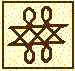

John Locke Chronology |
John Locke Manuscripts |
John Locke Resources |
John Locke Bibliography | ||
[ Table of Contents ] – [ Part One: Works by Locke ]

Two treatises of government (1689)
Translations of Two treatises of government
Two treatises of government. Chinese.
New
*164+
政府论 / 洛克著 ; 叶啓芳, 瞿菊农[瞿世英]译. – 第1版. – 北京 : 商务印书馆, 1981-82. – (汉译世界学朮名著丛书)
Zheng fu lun / Luoke zhu ; Ye Qifang, Qu Junong [Qu Shiying] yi. – Di 1 ban. – Beijing : Shang wu yin shu guan, 1981-82. – 2 vol. – (Han yi shi jie xue shu ming zhu cong shu)
Translation of the Second treatise (vol. 2) originally published in 1964.
Reprinted, 2009.
Unverified.
New
*164+
政府论 / 洛克著 ; 胡自信, 段智明译. // IN: 西方四大政治名著 / 州长治主编. – 第1版. – 天津 : 天津人民出版社, 1998.
“Zheng fu lun” / Luoke zhu ; Hu Zixin, Duan Zhimin yi. // IN: Xi fang si da zheng zhi ming zhu / Zhou Changzhi zhu bian. – Di 1 ban. – Tianjin : Tianjin ren min chu ban she, 1998.
ISBN 7-201-03039-6.
Unverified.
New
*164+
Two treatises of government / John Locke ; edited with an introduction, notes by Peter Laslett. – 第1版. – 北京 : 中国社会科学出版社, 1999. – (西学基本经典. 政治学)
Two treatises of government / John Locke ; edited with an introduction, notes by Peter Laslett. – Di 1 ban. – Beijing : Zhongguo she hui ke xue chu ban she, 1999. – 464 p. – (Xi xue jib en jing dian. Zheng zhi xue)
Translation by Feng Keli?
Unverified.
New
*164+
君主论. 政府论 / 冯国超主编. – 第 1 版. – [北京] : 中国社会出版社, [2000]. – (汉译世界名著经典文库)
Jun zhu lun. Zheng fu lun / Feng Guochao zhu bian. – [Beijing] : Zhongguo she hui chu ban she, [2000]. – 3, 362 p. – (Han yi shi jie ming zhu jing dian wen ku)
With translation of Machiavelli’s Il principe.
Unverified.
New
*164+
政府论两篇 / 约翰・洛克著 ; 赵伯英译. – 第1版. – 西安 : 陕西人民出版社, 2004. – (影响世界历史进程的书)
Zheng fu lun liang pian / Yuehan Luoke zhu ; Zhao Boying yi. – Di 1 ban. – Xi’an : Shanxi ren min chu ban she, 2004. – 15, 11, 12, 2, 270 p. – (Ying xiang shi jie li shi jin cheng de shu)
ISBN 7-224-06807-1.
Unverified.
New
*164+
洛克《政府论》导论 / 彼得・拉斯莱特著 ; 冯克利译. – 北京第1版. – 北京市 : 生活・讀書・新知三联书店, 2007. – 3, 2, 198 p. – (西学源流. 第 1 辑)
Luoke “Zheng fu lun” dao lun / Bide Lasilaite zhu ; Feng Keli yi. – Beijing di 1 ban. – Beijing Shi : Sheng huo, du shu, xin zhi san lian shu dian, 2007. – 3, 2, 198 p. – (Xi xue yuan liu. Di 1 ji)
Translation of the Laslett edition [Locke #118].
ISBN 978-7-108-02331-5.
New
*164+
政府论 / 约翰 洛克著 ; 丰俊功, 张玉梅译. – 北京 : 北京大学出版社, 2014. – 2 volumes (216 pages). – (未名社科. 大学经典)
Zheng fu lun / Yuehan Luoke zhu ; Feng Jungong, Zhang Yumei yi. – Beijing : Beijing da xue chu ban she, 2014. – 2 volumes (216 pages). – (Wei ming she ke. Da xue jing dian)
Unverified.
Two treatises of government. Chinese. 2nd.
New
*164+
洛克政府論次講 = Second treatise of government / 葉啓芳, 瞿菊農譯. – 初版. – 臺北 : 唐山出版社, 民國75 [1986]. – (唐山西潮文庫 ; 1)
Zheng fu lun ci jiang = Second treatise of government / Luoke ; Ye Qifang, Qu Junong yi. – Chu ban. – Taibei : Tangshan chu ban she, Min 75 [1986]. – 153 p. – (Tangshan xi chao wen ku ; 1)
ISBN 0-915-14493-X. 0-915-14486-7 (pbk)
Unverified.
Two treatises of government. Czech.
New
165
Dvě pojednání o vládě / John Locke ; z angl. orig. Two treatises of government přeložil a poznámkový komentář napsal Josef Král ; Jiřina Popelová, Politická teorie Johna Locka, úvodni studii. – [Praha] : Nakladatelství Československé Akademie Věd, 1965. – 278 p. – (Filosofická knihovna)
Translation of the Laslett edition [Locke #118].
For the introduction, see entry in Chapter 7.
L 11
Also: Druhé pojednání o vládě / John Locke ; z angl. přel. a pozn. komentář napsal Josef Král ; předml. Oskar Krejčí ; obálka a graf. úprava Václav Kučera. – 2. vyd. – Praha : Svoboda, 1992 (Brno : Mor. typografie). – 184 p. – (Filozofické dědictví). – ISBN 80-205-0222-X. – Unverified.
Two treatises of government. Danish. 2nd.
New
*165+
Anden afhandling om styreformen : et essay om borgerstyrets sande oprindelse, rækkevidde og formål / John Locke ; oversættelse, indledning og noter ved Niels Henningsen ; oversat fra engelsk … på grundlag af Peter Lasletts udgave fra 1960 … og David Woottons fra 1993. – Frederiksberg : Det lille Forlag, 1996. – 174 p. – (Redaktion filosofi)
ISBN 87-900-3052-4.
Unverified.
Also: 2. oplag, 2007. – Unverified.
Two treatises of government. Dutch. 2nd.
*165A
Over de burgerlyke regiering. Groningen. Sipkes, Cost en Bandsma. 1728. – 12o.
Listed in Johannes van Abkoude, Naamregister van de bekendsteen meest in gebruik zynde Nederduitsche boeken … 1600 tot het yaar 1761 (1773); no surviving copy is known.
Unverified.
Y 45; Schoneveld 7.
*165B
Over het staatsbestuur / Locke ; [translated, with notes, by F. van Zetten ; introduction by G.A. den Hartogh]. – Meppel : Boom, 1988. – 219 p.
See also Hartogh’s introduction.
ISBN 90-6009-850-1.
Unverified.
LNL 21:7
Also: Over het staatsbestuur / John Locke ; vert. [uit het Engels] F. van Zetten ; inl. G.A. den Hartogh. – 2e dr. – Amsterdam : Boom, 1994. – (Boom klassiek). – ISBN 90-60-09886-2. – Unverified.
Two treatises of government. Finnish. 2nd.
New
*165C
Tutkielma hallitusvallasta : tutkimus poliittisen vallan oikeasta alkuperästä, laajuudesta ja tarkoituksesta / John Locke ; suomennos ja esipuhe, Mikko Yrjönsuuri. – [Helsinki] : Gaudeamus, 1995. – 270 p.
ISBN 95-166-2640-8.
Unverified.
Two treatises of government. French.
New
*165D
Deux traités du gouvernement / J. Locke ; traduction et présentation par Bernard Gilson. – Paris : J. Vrin, 1997. – 282 p. – (Bibliothèque des textes philosophiques)
ISBN 2-7116-1308-9.
Unverified.
Two treatises of government. French. 1st.
New
*165E
“Premier traité du gouvernement civil.” // IN: Le débat Locke-Filmer / par Franck Lessay ; avec la traduction du Patriarcha et du Premier traité du gouvernement civil (1998). – p. 260-387.
—
A summary of the First treatise is appended to Locke #178.
Two treatises of government. French. 2nd.
Two treatises was introduced to the continent in Le Clerc’s review of the first English edition, which included extracts in French. It was made most familiar, however, in the anonymous French translation of the Second treatise which appeared in 1691, usually attributed to David Mazel. For discussion of the translation and its influence, see Mastellone 1979.
166
Du gouvernement civil, où l’on traitte de l’origine, des fondemens, de la nature, du pouvoir, & des fins des sociétez politiques. Traduit de l’anglois. A Amsterdam, chez Abraham Wolfgang … MDCXCI [1691]. [12], 321, [3] p. 12o.
“Translation of 1st London edition, 1R version, 1st chapter omitted, numbered by chapter instead of continuously and slightly differently divided, with an avertissement”–Laslett; translation attributed to David Mazel .
Reviews: J. Bernard, Bibl.Univ. 20 (1691):263-265; Basnage de Beauval, Hist.Ouvr.Sav. 7 (1690/91):457-465.
Y 46; L Fr 2; C 101; H&L 1291
—
The review by Basnage de Beauval in Histoire des ouvrages des savans contains extracts from the Mazel translation.
167
Du gouvernement civil, où l’on traite de l’origine, des fondemens, de la nature, du pouvoir, & des fins des sociétez politiques. Traduit de l’anglois. Nouvelle édition. A Genève, chez Du Villard & Jaquier. MDCCXXIV [1724]. [8], 365, [5] p. 12o.
The Mazel translation; paging errors: 116-117 numbered 126-127; 329-334 omitted.
Y 47; L Fr 3; C 101
168
Du gouvernement civil, où l’on traite de l’origine, des fondemens, de la nature, du pouvoir, & des fins des societe’s politiques. Traduit de l’anglois de Mr. Locke. Nouvelle édition, revue & corrigée. A Bruxelles. M.DCC.XLIX [1749]. XII, 358, [2] p. 12o.
The Mazel translation; may be fictitious imprint printed in Paris.
Y 48; L Fr 4
*169
Du gouvernement civil, où l’on traite de l’origine, des fondemens, de la nature, du pouvoir, et des fins des societe’s politiques. Traduit de l’anglois de Mr. Locke. Nouvelle édition, revue & corrigée. A Bruxelles. M.DCC.LIV [1754]. XII, 358, [2] p. 12o.
The Mazel translation; reissue of the 1749 edition with a cancel title page; may be fictitious imprint printed in Paris or Leipzig.
Unverified.
Y 49; L Fr 5
Rev.
170
Du gouvernement civil, par Mr. Locke. Traduit de l’anglois. Cinquieme edition, éxactement revûë & corrigée sur la 5. edition de Londres & augmentée de quelques notes, par L.C.R.D.M.A.D.P. A Amsterdam, chez J. Schreuder & Pierre Mortier le jeune. M.DCC.LV [1755]. XVIII, [2], 328 p. 12o.
The Mazel translation, with a preface and notes by Jean Rousset de Missy.
Y 50; L Fr 6; C 101
171
Du gouvernement civil, par Mr. Locke. Traduit de l’anglois. Sixieme edition. Exactement revue & corrigée sur la derniere edition de Londres & augmentée de quelques notes. Par L.C.R.D.M.A.D.P. A Amsterdam, chez Bartelemi Vlam. MDCCLXXXX [1780]. XVIII, [2], 328 p. 12o.
The Mazel translation, with notes by Rousset de Missy; “page-for-page reprint” of 1755 edition–Laslett.
Y 51; L Fr 7; C 101
172
Du gouvernement civil, par M. Locke. Traduit de l’anglois; Édition exactement revue & corrigée sur la dernière de Londres, augmentée d’un précis historique de la vie de l’auteur, & ornée de son portrait. A Londres; et se trouve à Paris, chez Servière, Libraire … M.DCC.LXXXIII [1783]. xxiv, 384 p. port. 12o.
The Mazel translation; includes a condensed version of Le Clerc’s “Eloge” (1705), and Locke’s portrait after Kneller.
Y 52; L Fr 8; C 101
New
172A
Traité du gouvernement civil, par M. Locke, traduit de l’anglais; revue et corrigée exactement, sur la dernière édition de Londres. A Paris, de l’imprimerie de Desveux …, et chez Royez, Libraire … l’an III de la République française [1795]. 368 p.
The Mazel translation; issued in 8o and 4o large-paper formats.
Y 54; L Fr 10 b-c; C 101
Rev.
173
Traité du gouvernement civil, par M. Locke, traduit de l’anglais; revue et corrigée exactement, sur la dernière édition de Londres. A Paris, de l’imprimerie de Desveux …, et chez Royez, Libraire … l’an III de la République française [1795]. XXIV, v-xvj, [1], 18-486, [2] p. 12o.
The Mazel translation.
Y 55; L Fr 10 a; C 101
174
Du gouvernement civil, par M. Locke, traduit de l’anglois. Septième édition, exactement revue & corrigée sur la dernière edition de Londres, et augmentée de quelques notes. Par L.C.R.D.M.A.D.P. A Paris, chez André, Imprimeur-Libraire …. An III (1795). xvj, 342, [2] p. 12o.
The Mazel translation, with notes by Rousset de Missy; reprint of the 1780 edition.
Y 56; L Fr 11
175
Du gouvernement civil / par Locke ; traduit de l’anglais. – Édition exactement revue & corrigée sur la dernière de Londres, augmentée d’un précis historique de la vie de l’auteur, et ornée de son portrait, 4. édition française. – A Londres ; et se trouve à Paris : chez Servière, An 10. 1082 [=1802]. – xxii, 356 p.
The Mazel translation; reprint of the 1783 edition.
L 3.12
*176
Traité du gouvernement civil / Locke. – Paris : Volland, 1802. – xxii, 356 p.
The Mazel translation.
Unverified.
L 3.13
177
177 Essai sur le pouvoir civil / de John Locke ; texte traduit, présenté et annoté par Jean-Louis Fyot ; préface de B. Mirkine-Guetzévitch et Marcel Prélot. – Paris : Presses Universitaires de France, 1953. – xvi, 223 p. – (Bibliothèque de la science politique. 2. série, Les grandes doctrines politiques)
Translation of the 1764 London edition.
For the preface, see entry in Chapter 7.
L 3.14
178
178 Deuxième traité du gouvernement civil ; Constitutions fondementales de la Caroline ; Résumé du Premier traité du gouvernement civil / John Locke ; introduction, traduction et notes par Bernard Gilson. – Paris : J. Vrin, 1967. – 255 p.
For the introduction, see entry in Chapter 7.
New
178A
Traité du gouvernement civil / John Locke ; traduction de David Mazel ; chronologie, introduction, bibliographie, notes par Simone Goyard-Fabre. – [Paris] : Flammarion, [1984]. – 408 p.
Includes “Introduction” (p. 17-155), “Vie de Jean Locke, traduit du Plutarque anglais” (p. 379-384), Coste’s ”Éloge de M. Locke” (p. 387-400) and a French translation of the Declaration of Right, 1689 (p. 402-403)
Also: 2ème édition corrigée, 1992.
Review: T. Marshall, “John Locke et la philosophie constitutionelle” (1985)
LNL 19:9
New
*178A+
Du gouvernement civil / traduit de l’anglois ; introduzione di Salvo Mastellone. – Firenze : Centro editoriale toscano, ©1988. – xxix, 359 p.
Facsimile reprint of Mazel translation (Geneva, 1724), with introduction in Italian.
Unverified.
New
*178B
Le second traité du gouvernement : essay sur la véritable origine, l’étendue et la fin du gouvernement civil / John Locke ; traduction, introduction et notes par Jean-Fabien Spitz ; avec la collaboration de Christian Lazzeri. – Paris : Presses universitaires de France, ©1994. – 302 p. – (Epiméthée, essais philosophiques)
ISBN 2-13-045839-4.
Unverified.
New
*178+
Traité du gouvernement civil : traduction de David Mazel (1795) ; Lettre sur la tolérance : traduction de Jean LeClerc (1710) / Locke ; présentation et notes, Benjamin Bélair. – Anjou (Québec), Canada : Éditions CEC, ©2014. – vi, 201 pages. – (Philosophies vivantes ; 28)
ISBN 978-2-761-76774-3.
Unverified.
LS 17:21
Two treatises of government. French. 2nd. Abridgement.
179
“Du gouvernement civil, de sa véritable origine, de son étendue & de sa fin,” par Locke. // IN: Bibliothèque de l’homme public; ou, Analyse raisonnée des principaux ouvrages françois et étrangers, sur la politique en geneeral, la législation, les finances, la police, l’agriculture, & le commerce en particulier, & sur le droit naturel & public. Par M. le Marquis de Condorcet …; M. de Peysonel …; M. Le Chapelier …, & autres gens de lettres. A Paris, chez Buisson. 1790-1792. 8o. Tome 2 (1790):135-211.
From the Mazel translation.
Y 53; L Fr 9
Two treatises of government. French. 2nd. Selections.
—
Selections in French from the Second treatise are included in Locke #377.
Two treatises of government. German.
—
According to the Gesamtverzeichnis 1700-1910, vol. 89:366, there was a German translation of the Two treatises published at Jena in 1716. No surviving copies are known.
Y 57
180
Zwei Abhandlungen über Regierung / John Locke. Nebst, Patriarcha / von Sir Robert Filmer ; deutsch von Hilmar Wilmanns. – Halle a. S. : M. Niemeyer, 1906. – viii, 383 p.
Translated from Morley’s 1884 edition [Locke #115]–Laslett.
L 7.2
181
181 Zwei Abhandlungen über die Regierung / John Locke ; herausgegeben und eingeleitet von Walter Euchner ; [deutsche Übertragung von Hans Jörn Hoffmann]. – Frankfurt : Europäische Verlagsanstalt ; Wien : Europa-Verlag, ©1967. 2 369 p. – (Politische Texte)
For the introduction, see entry in Chapter 7.
Reprinted: Frankfurt am Main : Suhrkamp, 1977. – 360 p. – (Suhrkamp-Taschenbücher. Wissenschaft ; 213); [2. Aufl., 1983]; [3. Aufl., 1986]; 4. Aufl., 1989.
ISBN 3-518-27813-4.
Two treatises of government. German. 2nd.
182
Le gouvernement civil, oder Die Kunst wohl zu regieren. Durch den berümten Engelländer Jean Lock beschrieben. Runmehro aber Wegen der sonderbahren darinnen enthaltenen und zum Theil auf den Englischen Staat gerichteten Reflexionen aus der Englischen und Frantzös. Sprache in die Hochteutsche übersetzet von G. Franckfurth und Leipzig. 1718. Bey Johann Bernhardt Hartung. [14], 513, [1] p. 12o.
German translation of Mazel’s French version [Locke #166].
Y 58; L Ge 1; C 101
Reprinted in: Locke in Germany : early German translations of John Locke, 1709-61 / selected and introduced by Konstantin Pollok. – Bristol : Thoemmes Continuum, 2004. – vol. 6.
183
Über die Regierung = The second treatise of government / John Locke ; in der Übersetzung von Dorothee Tidow ; mit einem Essay “John Locke, der Weg der Freiheit,” einem biographischen Grundriss und einer Bibliographie herausgegeben von Peter Cornelius Mayer-Tasch. – [Hamburg] : Rowohlt, 1966. – 247 p. – (Rowohlts Klassiker der Literatur und der Wissenschaft ; 201-202. Philosophie der Neuzeit ; Bd. 8)
Translated from Laslett’s edition (Locke #118, 1964 printing); also published in Munich in 1965; reprinted as: Über die Regierung / John Locke ; in der Übersetzung von Dorothee Tidow ; mit eine Nachwort von Peter Cornelius Mayer-Tasch. – Stuttgart : Reclam, 1974. – 246 p. – (Universal-Bibliothek ; 9691-9693); reprinted in 1988. – ISBN 3-150-09691-X.
For the introduction, see entry in Chapter 7.
L 7.3 [1965]
—
A German translation of the Second treatise was also included in Locke #872.
Two treatises of government. German. 2nd. Selections.
183A
“John Locke.” // IN: Rationalismus / herausgegeben von Rainer Specht. – Stuttgart : Reclam, 1979. – (Geschichte der Philosophie in Text und Darstellung ; Bd. 5). – (Universal-Bibliothek ; Nr. 9915). – p. 44-58.
From the Tidow translation.
*184
“Die zweite Abhandlung über die Regierung” / von John Locke. // IN: Zum ewigen Frieden und andere Texte von Kant, Hobbes und Locke. – Frankfurt am Main : Kühl, Verlagsgesellschaft Kommunismus und Klassenkampf, 1979. – (Kommunistische Volkszeitung. Kommunismus und Klassenkampf. Quellenh. Reihe Philosophie)
Unverified; source: RBP 33:4397.
New
184+
Politisches Denken / John Locke ; ausgewählt und kommentiert von Klaus Kremb. – 1. Auflage. – Wiesbaden : Marix Verlag, 2015. – 168 pages.
ISBN 978-3-7374-0994-0.
Unverified.
LS 17:20
Two treatises of government. Greek. 2nd.
New
184A
Deuterē pragmateia peri kyvernēsēōs : dokimio me thema tēn alēthkē ekchē ektasē kai skopo tēs politikēs exousias / John Locke ; eisagōge-metaphrasē-scholia Paschalēs M. Kitromēlidēs. – Athēna : Ekdoseis Gnōsē, 1990. – 302 p. – (Philosophikē kai politikē bibliothēkē ; 33)
ISBN 96-023-5393-7.
For the introduction, see Kitromilides, “Ē politikē skepsē tou John Locke ōs ermēneutiko problēma.” (1990).
LNL 21:5
A “new revised edition” was published: Athens : Polis, 2010. – 311 p. – ISBN 978-960-435-232-6.
LS 10:8
Review: E. Sembou, Locke studies 11 (2011):189-197.
Two treatises of government. Hebrew. 1st.
New
*184B
המסכת הראשונה על הממשל המדיני.
ha-Masekhet ha-rishonah ˁal ha-mimshal ha-medini / G'on Lokḳ ; me-Anglit Shunamit Lifshits. – Tel Aviv : Resling, 2008. – 250 p. – (Logus, ha-ḳlasiḳah shel ha-filosofyah)
Unverified.
Two treatises of government. Hebrew. 2nd.
*185
ha-Masekhet ha-sheniyah. ’Al ha-mimshal ha-medini, me-et G’on Lok ; tirgem me-Anglit Yosef Or ; mahadurah sheniyah mugahat. – Jerusalem : Magnes Press, 1959. – vii, 182 p. – (Sifre-mofet filosofiyim ; 27)
Translation of 1690 edition, by Joseph Ur.
Unverified; source: NUC.
L 12.1
Two treatises of government. Hindi. 2nd.
Two treatises of government. Italian.
187
Due trattati sul governo / di John Locke. Col, Patriarcha / di Robert Filmer ; a cura di Luigi Pareyson. – [Torino] : Unione Tipografico Editrice Torinese, 1948. – 555 p. – (Classici politici ; vol. 3). – (Classici UTET)
Also: 2a ediz. riveduta, 1960.
For the introduction, see entry in Chapter 7.
Reviews: Anon., Belfagor 1948:498; N. Matteini, Sophia 1949:378-379.
L 4.5; M33, 291, 296; LNL 4:12
Two treatises of government. Italian. 2nd.
188
Il governo civile di Mr. Locke. Tradotto nell’ italiano idioma e dedicato a sua eccessenza il Sig. Girolamo Durazzo … Amsterdam MDCCLXXIII [1773]. vii, [1], 288 p. 8o.
Italian translation of Mazel’s French version [Locke #166]; probably printed in Italy. See discussion by M. G. Bottaro Palumbo, “La prima traduzione italiana del ‘Secondo trattato …’ ” (1987)
Y 59; L It 1
189
Saggio sul governo civile : riguardante la sua vera origine, la sua estensione, il suo fine / J. Locke ; traduzione e prefazione di V. Beonio-Brocchieri. – Torino : Fratelli Bocca, 1925. – 286 p. – (Piccola biblioteca di scienze moderne ; no. 316)
For the preface, see entry in Chapter 7.
L 4.3; M 11
190
Saggio sul governo civile / Giovanni Locke ; traduzione, introduzione e note di Alfredo Sabetti. – Napoli : Edizioni Glaux, 1956. – 130 p.
For Sabetti’s introduction, see entry in Chapter 7.
Reviews: D.A. Cardone, Ric.Fil. 1956:2:61; M. Dal Pra, Riv.Crit.Stor.Fil. 1957:492-493.
L 4.6; M 40, 316, 319
191
Trattado sul governo / John Locke ; a cura di Lia Formigari. – Roma : Editori Riuniti, 1974. – 231 p. – (Le idee ; 91)
For the introduction, see entry in Chapter 7.
Review: Franco, “La proprietà per Locke” (1974)
M 62, 268, 362
*192
Antologia di scritti politici / John Locke ; a cura di Nicola Matteucci. – Bologna : Il Mulino, 1980. – 199 p. – (Il pensiero moderno. Politica ; 26)
Unverified; source: RBP 33:4456.
New
*192A
Il secondo trattato sul governo : saggio concernente la vera origine, l’estensione e il fine del governo civile / John Locke ; testo orig. a fronte ; introduzione di Tito Magri ; traduzione de Anna Gialluca. – Milano : Biblioteca Universale Rizzoli, 1998. – 397 p. – (BUR ; L, 1184)
ISBN 88-17-17184-0
Unverified.
Two treatises of government. Italian. 2nd. Selections.
*193
Origine, estensione e fine del governo civile di Locke. [Rissunto dell’opera e considerazione su di essa.]. – Italia, 1808. – 87 p.
Unverified; source: BN.
L 4.2
194
Saggio sul governo civile / Giovanni Locke ; passi scelti, tradotti e annotati a cura di Giulio Preti. – Milano : Editoriale Milano, [1947]. – 134 p. – (Letture di filosofia politica)
For Preti’s introduction, see entry in Chapter 7.
L 4.4; M 32
195
195 “John Locke.” // IN: Antologia del pensiero politico inglese / a cura di Anna Maria Crinò. – Firenze : F. De Silva, 1953. – p. 165-176.
M 38
195A
Antologia degli scritti politici di John Locke / a cura di Felice Battaglia ; traduzione de Alda De Caprariis. – Bologna : Società editrice il Mulino, ©1962. – 199 p. – (Classici della democrazia moderna ; 2)
Selections from Two treatises, Letter concerning toleration.
Reviews: G. Campanini, Riv.Int.Filos.Diritto 1964:648-649; M. Casagrande, Riforma della scuola 1963:no.8-9:34.
M 49, 337, 340
*196
Il pensiero politico / a cura di Umberto Cerroni. – Roma : Editori Riuniti, 1966.
See p. 423-465.
Unverified.
M 53
[197]
“Locke.” // IN: Politica / a cura di Francesco Valentini … (1969-70). – vol. 1:750-761. – See entry in Chapter 7.
[198]
“Antologia di passi scelti dal secondo dei Trattati sul governo.” // IN: La filosofia politica di John Locke … / Alfredo Sabetti … [1971]. – p. 103-198. – See entry in Chapter 7.
[199]
Il pensiero liberale e il pensiero democratico … / a cura di Roberto Parenti … (1973). – p. 40-53, 59-60, 80-86. – See entry in Chapter 7.
[200]
Diritto naturale e relazioni tra gli stati / Luigi Bonanate … (1976). – p. 174-185. – See entry in Chapter 7.
[201]
“Locke e l’origine militare dello Stato.” // IN: Dibattito sulle origini dello Stato … / di Giacomo Grassi … (1976). – p. 137-140. – See entry in Chapter 7.
Two treatises of government. Japanese.
New
*201+
市民政府論 / ロック著 ; 鵜飼信成訳. – 東京 : 岩波書店, 1981. – (岩波文庫)
Shimin seifu ron / Rokku cho ; Ukai Nobushige yaku. – Tōkyō : Iwanami Shoten, 1981. – 253 p. – (Iwanami bunko)
Unverified.
New
*201+
統治論 : 全訳 / ジョン・ロック著 ; 伊藤宏之訳. – 東京 : 柏書房, 1997.
Tōchiron : zen'yaku. – Tōkyō : Kashiwa Shobō, 1997. – 367, 2 p.
Translated by Hiroyuki Itō.
ISBN 4-7601-1418-1.
Unverified.
New
*201+
統治二論 / ジョン・ロック [著] ; 加藤節訳. – 東京 : 岩波書店, 2007.
Tōchi niron. – Tōkyō : Iwanamishoten, 2007. – 407, 7 p.
Japanese translation by Takashi Katō.
ISBN 9-784-00024-140-3.
Reprinted in 2010.
New
*201+
統治論 / ロック [著] ; 宮川透訳. – 東京 : 中央公論新社, 2007. – 23, 265 p. – (中公クラシックス ; W (49))
Tōchiron. – Tōkyō : Chūōkōronshinsha, 2007. – 23, 265 p. – (Chūkō kurashikkusu ; W (49))
Japanese translation by Tōru Miyakawa.
ISBN 9-784-1216-0098-1.
New
*201+
市民政府論 / ロック著 ; 角田安正訳. — 東京 : 光文社, 2011. — (光文社古典新訳文庫 ; K-Bロー1-1)
Shimin seifu ron / Rokku cho ; Tsunoda Yasumasa yaku. &mdahs; Tōkyō : Kōbunsha, 2011. — 369 p. — (Kōbunsha Koten Shin'yaku Bunko ; K(B)(ro)(1)(1))
ISBN 978-4-334-75234-7.
Unverified.
Two treatises of government. Japanese. 2nd.
*202
[A Japanese translation of the Second treatise by Bennosuke Hattori was published in 1947 and reprinted in 1958.]
Unverified.
L 14.1
Two treatises of government. Korean. 2nd.
203
Simin chōngburon = The second treatise of government / John Locke. – [1970]. – 348 p.
New
*203+
통치론 / 로크 ; 李克燦譯. 자유론 / J. S. 밀 ; 李克燦譯. – 초판 – 서울특별시 : 삼성출판사, 1990. – (三省版・世界思想全集 = Great books of the world ; 13)
T'ongch'iron / Lok'ŭ ; Yi Kŭk-ch'an yŏk. Chayuron / J.S. Mil ; Yi Kŭk-ch'an yŏk. – Ch'op'an. – Sŏul T'ŭkpyŏlsi : Samsŏng Ch'ulp'ansa, 1982. – 389 p. – (Samsŏngp'an, segye sasang chŏnjip = Great books of the world ; 13)
Reprinted in 1990.
ISBN 89-7438-037-4.
Unverified.
Two treatises of government. Norwegian. 2nd.
204
Borger og statsmakt / John Locke ; forord av Kåre Foss ; [oversatt av Kirsten Pauss Heggdal]. – Oslo : Dreyers Forlag, 1947. – xx, 226 p. – (Politisk bibliotek. Klassikerne)
For the introduction, see entry in Chapter 7.
L 9.1
Two treatises of government. Norwegian. 2nd. Selections.
[205]
“Om naturtilstanden” / John Locke. // IN: Naturret og menneskerettigheter / Frede Castberg (1967). – p. 76-79. – See entry in Chapter 7.
Two treatises of government. Polish.
New
*205A
Dwa traktaty o rządzie / John Locke ; prezelożyl, wstępem i komentarzem opatrzyl Zbigniew Rau ; przekład przejrzal Adam Czarnota. – Warszawa : Wydawn. naukowe PWN, 1992. – cxi, 353 p. – (Biblioteka klasyków filozofii)
ISBN 83-011-0836-3.
Unverified.
Also: Warszawa : Wydawnictwo Aletheia, 2015. – 402 pages. – (Fundacja Aletheia). – ISBN 978-83-628-5879-6. Unverified.
Two treatises of government. Portuguese.
*205B
Dois tratados sobre o governo / John Locke ; tradução, Júlio Fischer. – São Paulo : Martins Fontes, 1998. – 639 pages. – (Coleção clássicos)
ISBN 978-85-336-0796-2.
Unverified.
Two treatises of government. Portuguese. 2nd.
*206
Ensáio sôbre a verdadeira origem, extensão e fim do govêrno civil / escripto em englez por John Locke ; e traduzido para Portuguez por João Oliveira de Carvalho … ; offerecido aos Constitucionaes Portuguezes, como principios fundamentaes para a consolidação de Carta Constitucional, datada em 19 de Abril de 1826. – Londres : impresso por Ricardo Taylor, 1833.
Unverified.
L 6.1
*207
Segundo tratado sobre o governo / John Locke ; trad. de E. Jacy Monteiro. – São Paolo : Abril Cultural, 1963.
Unverified.
Also included in Locke #874.
B 107
New
*207A
Segundo tratado sobre o governo civil e outros escritos : ensaio sobre a origem, os limites e os fins verdadeiros do governo civil / John Locke ; introdução de J. W. Gough ; tradução de Magda Lopes e Marisa Lobo da Costa. – Petrópolis, RJ : Vozes, 1994. – 318 p. – (Clássicos do pensamento político ; vol. 14)
ISBN 85-326-1240-7.
Unverified.
New
*207B
Segundo tratado sobre o governo : texto integral / John Locke ; tradução de Alex Marins. –; São Paulo : Martin Claret, 2005. – 176 p. – (Coleção a obra prima do autor)
ISBN 978-85-723-2494-6.
Unverified.
Two treatises of government. Russian. 2nd.
*208
[A Russian translation of the Second treatise was published in 1902 in St. Petersburg, by P.P. Sojkin.]
Unverified.
L 10.1
Two treatises of government. Spanish and English.
209
La polemica Filmer-Locker sobre la obediencia politica : Patriarcha de Robert Filmer : Sobre el govierno de John Locke / estudio preliminar de Rafael Gambra ; texto, traducción y notas de Carmela Gutierrez de Gambra. – Madrid : Instituto de Estudios Políticos, 1966. – xli, 277, 277 p.
Spanish and English texts on facing pages.
For the introduction, see entry in Chapter 7.
Two treatises of government. Spanish.
New
*209A
Dos ensayos sobre el gobierno civil / John Locke ; ed. Joaquín Abellán ; traducción, Francisco Giménez Garcia. – Madrid : Espasa-Calpe, 1991. – 389 p. – (Colección Austral ; 240)
Unverified; source: RBP 1993:5527.
Two treatises of government. Spanish. 2nd.
*210
Tratado del govierno civil / por Mr. Locke ; traducido de la septima edición francesa, por D.S.C. y L. – Madrid : La Minerva Española, 1821.
Spanish translation of the 1795 printing of Mazel’s French translation [Locke #174].
Unverified.
L 5.1
211
Ensayo sobre el govierno civil / John Locke ; traducción y prefacio de José Carner. – Pánuco, México : Fondo de Cultura Economica, 1941. – xx, 170 p. – (Sección de ciencia politica [del Fondo de cultura económica]. I. Los clássicos)
For the preface, see entry in Chapter 7.
Review: Ayala, “La aventura del pensamiento político” (1941)
L 5.3
Also 2a. ed. – México : FCE, 1997. – xxi, 157 p. – Unverified.
212
Segundo tratado de gobierno / John Locke ; editado con una introducción de Thomas P. Peardon ; [traducción, Mario H. Calichio]. – Buenos Aires : Editorial Agora, 1959. – 174 p. – (Colección Hombres y problemas ; 24)
Translation of Peardon’s 1952 English edition [Locke #131]
*213
Ensayo sobre el govierno civil / John Locke ; traducción del inglés por Amando Lázaro Ros ; introducción de Luis Rodríguez Aranda. – Madrid : Aguilar, 1969. – xxiii, 189 p. – (Iniciación política)
For the introduction, see entry in Chapter 7.
Reprinted in 1973, 1981.
ISBN 84-036-7009-5.
New
*213+
Segundo tratado sobre el gobierno civil : un ensayo acerca del verdadero origen, alcance y fin del gobierno civil / John Locke ; traducción, prólogo y notas de Carlos Mellizo. – Madrid : Alianza Editorial, 1990. – 238 p. – (El Libro de bolsillo ; 1483)
ISBN 8-42-060483-6.
Unverified.
New
*213+
Ensayo sobre el gobierno civil / John Locke. – 2. ed. – México : Ediciones Gernika, 1996. – 230 p. – (Clásicos ciencia política ; 20)
ISBN 96-865-9986-X.
Unverified.
New
*213+
Ensayo sobre el gobierno civil / John Locke. – Madrid : Alba, ©1997. – 252 p.
ISBN 84-7567-057-1.
Unverified.
New
*213+
Tratado sobre el gobierno civil / John Locke ; traducción y prólogo de Manuel Formoso Herrera. – 1. ed. – San José, Costa Rica : EDUCA, 1997. – 198 p.
Unverified.
New
*213+
Ensayo sobre el gobierno civil / John Locke. – 2. ed. – México : Porrúa, 1998. – xxi, 159 p. – (Colección sepan cuántos ; 671)
Unverified.
New
*213+
Segundo ensayo sobre el gobierno civil : un ensayo sobre el verdadero origen, alcance y finalidad del gobierno civil / John Locke ; traducción del inglés y notas, Cristina Piña. – 1a ed. en Biblioteca de obras maestras del pensamiento. – Buenos Aires : Editorial Losada, 2002. – 177 p. – (Biblioteca de obras maestras del pensamiento ; 9)
ISBN 95-003-9241-0.
Unverified.
New
*213+
Ensayo sobre el gobierno civil : segundo tratado sobre el gobierno civil : un ensayo concerniente al verdadero origin, alcance y finalidad del gobierno civil / John Locke ; traducción, selección bibliográfica y notas, Claudio Amor y Pablo Stafforini. – [Buenos Aires] : Universidad Nacional de Quilmes ; Prometeo Libros, 2005. – 295 p. – (Polítíca ; 2)
ISBN 978-987-558-058-9.
Unverified.
New
*213+
Tratado del gobierno civil / John Locke. – Buenos Aires : Claridad, 2005. – 176 p.
ISBN 95-062-0061-0.
Unverified.
Two treatises of government. Spanish. 2nd. Selections.
New
*214
Segundo tratado sobre govierno civil : selección. – San Juan, P.R. : La Primavera, 1956. – 72 p.
Unverified; source: NUC.
*215
El derecho a la rebelión / John Locke ; [ed.] E.I. Groisman. – Buenos Aires, 1973.
Unverified.
H&W 1983
New
*215+
Ensayo sobre el gobierno civil / John Locke ; introducción, selección, notas y propuestas de trabajo Ernesto Ponce. – 5. ed. – México : Ediciones Nuevomar, 1984. – 132 p. – (Lecturas críticas ; no. 7)
ISBN 96-8469-045-2.
Unverified.
—
Selections in Spanish from the Second treatise included in: Locke, empirismo y experiencia : [antología y critica] / Augustín González Gallego. – Barcelona : Montesinos, 1984. – 126 p. – (Biblioteca de divulgación filosófica ; 2)
New
*215A
“John Locke (1632-1704).” // IN: La libertad política en el pensamiento de los siglos XVII y XVIII : selección de textos / Joaquín Barceló [compilador]. – [Santiago] : Universidad de Chile, Biblioteca de Ciencias, Económicas y Administrativas, [1987]. – (Serie Econom¡a). – (Publicación del Departamento de Economía ; no. 159). – p. 95-118.
Contains selections from the Second treatise and the Letter concerning toleration , translated by Jorge Valdivieso Videla.
Unverified; source: BPh 36:281.
New
*215B
“Segundo tratado sobre el gobierno : fragmentos” / John Locke. // IN: La idea del contrato social en la tradición inglesa / selección de textos, traducción e introducción de Carlos E. Miranda. – [Santiago] : Departamento de Economía, Facultad de Ciencias Económicas y Administrativas, Universidad de Chile, [1987]. – (Serie Economía). – p. 93-140.
See also the editor’s introduction, p. 21-29.
Two treatises of government. Swedish. 2nd.
New
216
Johan Lockes Oförgripelige tankar om werldslig regerings rätta ursprung, gräntsor och ändamål; ofwersatte ifrån engelskan af Hans Harmens … Stockholm, uti det Kongl. Tryckeriet, Åhr 1726. [8], 382, [2] p. 8o.
Swedish translation of Mazel’s French translation; translated by order of the Swedish Riksdag.
Y 60; L Sw 1
New
*216+
Andra avhandlingen om styrelseskicket : en essä angående den civila styrelsens sanna ursprung, räckvidd och mål / John Locke ; förord: Eva-Lena Dahl ; översättning från engelskan av Eva Backelin ; [fackgranskning, Bengt Hansson]. – Göteborg : Daidalos, 1998 ; (Uddevalla : Mediaprint). – 190 p.
ISBN 91-7173-056-7.
Unverified.
Two treatises of government. Turkish.
New
*216+
Hükümet üzerine ikinci inceleme : sivil yönetimin gerçek kökeni, boyutu ve amacı üzerine bir deneme / John Locke ; Fahri Bakırcı [translator]. – 1. bs. – Ankara : Babil, 2004. – 200 pages. – (Babil ; 18. Güncel ; 13)
ISBN 978-97-563-6016-3.
Unverified.
Two treatises of government. Vietnamese.
New
*216+
Khảo luận thứ hai về chính quyền : chính quyền dân sự / John Locke ; Lê Tuấn Huy dich, chú thích và giới thiệu. – Hà Nội : Tri Thức, 2007. – 315 p.
Reprinted: Tái bản lần thứ nhất. – Hà Nội : Nhà xuất bản Tri Thức, 2013. – 326 pages. – (Tủ sách tinh hoa tri thức thê giới)
Unverified.
Early Notices of Two treatises of government
The nineteenth century saw Locke as the philosopher of the Glorious Revolution, of the eighteenth-century Whig oligarchy, and of the American Revolution against that regime. Recent scholarship has cast doubt on his influence in all these spheres; see Dunn 1969, Thompson 1976, Pocock 1985, and Bailyn 1967. In fact, the early notices were few and often indirect: the wholesale plagiarism of the compiler of Political aphorisms, a favorable remark by the Whig lawyer William Atwood, and extensive use of Lockean ideas by Locke’s friend James Tyrrell in several of his dialogues on political issues. Most contemporaries did not find Locke’s political ideas relevant in the years following the revolution. His discussions of the social contract, the labor theory of property and the people’s right to overthrow an unjust government stood outside the current traditions of political discourse.
The Two treatises did become involved in two political controversies. In 1698, Locke’s friend William Molyneux used Lockean principles to argue against the jurisdiction of the English Parliament over Ireland. He was immediately and thoroughly attacked for his efforts, by Whigs and Tories alike; Locke came in for his share of the abuse but, steadfastly denying his authorship, maintained his silence. Later, during the height of the party wars in the reign of Queen Anne, the Tory publicist Charles Leslie found it useful to attack his Whig opponents by refuting Locke’s ideas. After 1714, when the Two treatises appeared among Locke’s writings in the collected edition of his works, it quickly became a ’classic,’ cited by friend and foe for purposes having little to do with the author’s own concerns.
—
[Anonymous]. Political aphorisms … (1690).
[217]
[Atwood, W.] The fundamental constitution of the English government … (1690).
[218]
[Tyrrell, J.] Bibliotheca politica … (1694).
[219]
Molyneux, W. The case of Ireland’s being bound by acts of Parliament in England, stated. … (1698).
[220]
[Atwood, W.] The history, and reasons, of the dependency of Ireland upon the imperial crown of the kingdom of England. … (1698).
A refutation of Molyneux.
[221]
Cary, J. A vindication of the Parliament of England … (1698).
A refutation of Molyneux.
[222]
[Clement, S.] An answer to Mr. Molyneux … (1698).
[223]
[Leslie, C.] Considerations of importance to Ireland … (1698).
A refutation of Molyneux.
[224]
[Leslie, C.] The new association. Part II. … (1703).
[225]
[Anonymous]. An essay upon government. … (1705).
[226]
[Leslie, C.] The rehearsal. … (1704-1709).
[227]
Hoadly, B. The original and institution of civil government, discuss’d. … (1710).